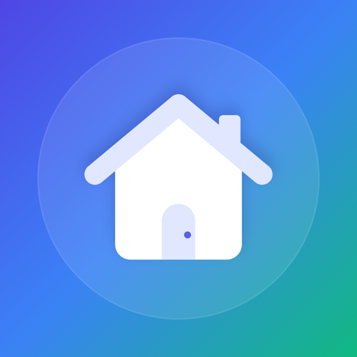

myHome
Home maintenance, appliances and service contacts in one place.
Keep track of maintenance tasks like changing filters or cleaning gutters, with reminders when they're due. Save your appliances with their model numbers, warranties and photos, and keep your plumber, electrician and other service contacts handy. You can share your household with the people you live with so everyone sees the same list. myHome runs on iPhone with iOS 18 or later, and it has no ads.
Contact
Questions, feedback or a bug to report? Email:
If you're reporting a bug, please include:
- Your iOS version (Settings → General → About)
- The myHome version
- Whether you're sharing a household, and if so whether you're the owner or a member
- The steps that make the problem happen
Frequently asked questions
Where is my data stored?
On your iPhone, and in your own iCloud account so it's backed up and can be shared. myHome has no server and no account of its own, and I can't see your data.
How do I move my data to a new iPhone?
Sign in to the new iPhone with the same Apple ID and install myHome. Your data downloads from iCloud. Other iPhones signed in to the same Apple ID stay in sync too.
How do I share my household?
On the Dashboard, tap the people button at the top left, then Invite Someone. Send the invite by Messages, Mail or a link. The person you invite needs an iPhone with myHome installed and an Apple ID signed in to iCloud. Everyone in the household can add, edit and delete appliances, tasks and contacts, and changes sync to everyone's iPhone.
What happens to my data when I join someone else's household?
If you already have appliances, tasks or contacts in myHome, the app tells you how many and asks before joining. Joining deletes them, from your iPhone and your iCloud, and replaces them with the shared household. This can't be undone.
How do I leave a household, or stop sharing mine?
Open the Household screen from the Dashboard.
- If you joined someone else's household, tap Leave Household. The household's data is removed from your iPhone. Anything you added stays with the household.
- If it's your household, tap Manage People to remove someone, or Stop Sharing to remove everyone. You keep everything. The people removed lose access, and the household's data is removed from their iPhones.
Changes aren't showing up on another iPhone. What should I check?
- Both iPhones are connected to the internet and signed in to iCloud.
- iCloud is turned on for myHome in Settings → [your name] → iCloud.
- Your iCloud storage isn't full.
Changes usually arrive within a minute, but can take longer. Opening myHome often helps it catch up.
When do reminders arrive?
At 9 a.m. on a task's due date, as long as Remind Me is on for that task and notifications are allowed for myHome in Settings → Notifications. In a shared household, everyone gets reminders for every task.
Does deleting the app delete my data?
No. It removes myHome's data from that iPhone only. Your data stays in your iCloud and comes back if you reinstall. If you're in a shared household, you stay in it until you leave or the owner removes you.
How do I delete all my data?
Delete your appliances, tasks and contacts in the app. That deletes them from your iCloud too. If you're in someone else's household, leave it first so you don't delete things they still need. To remove everything myHome has stored in your iCloud at once, look for myHome in Settings → [your name] → iCloud → Manage Account Storage.
Privacy
myHome doesn't collect any data. Your data stays on your iPhone and in your own iCloud account. Read the full myHome Privacy Policy.